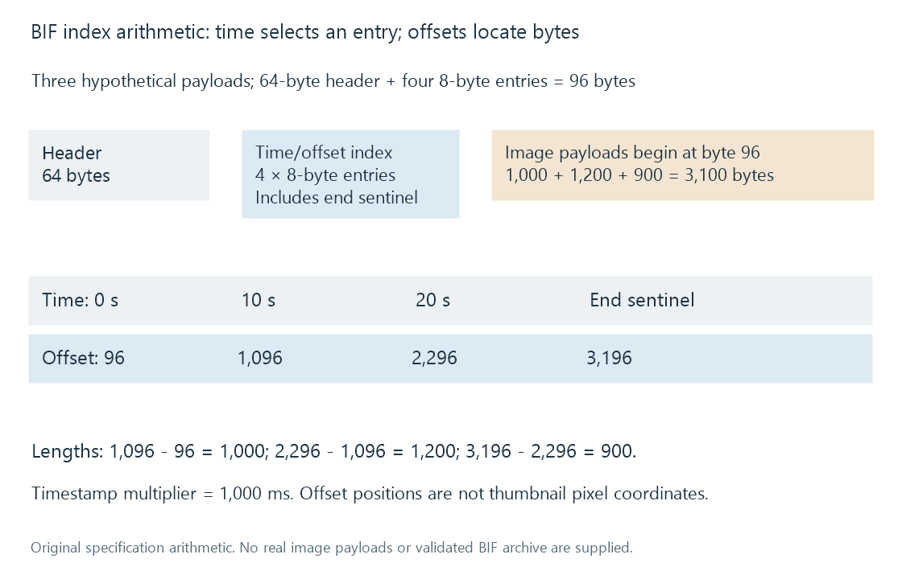
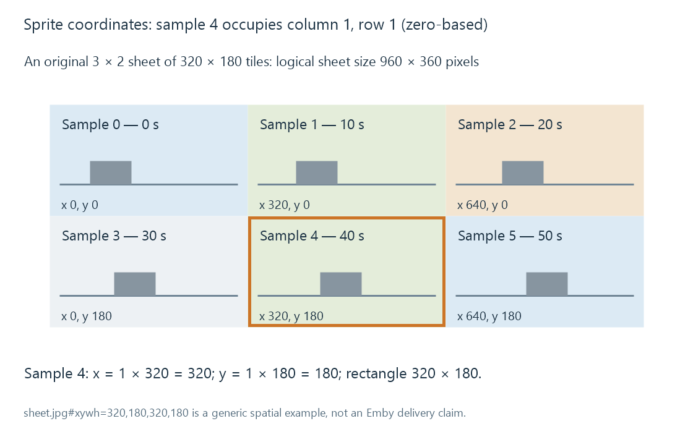

Seek-preview thumbnails
Seek-preview thumbnails are time-indexed small images that help a viewer locate scenes without decoding full video interactively for every seek position.
A seek-preview thumbnail is a small picture associated with a position on a video timeline. When the viewer scrubs through the progress bar, the app can display the nearby indexed picture instead of repeatedly opening and decoding the full-resolution video at each pointer movement.
The preview is an aid to locating content. It does not change the main video's resolution or guarantee that playback will begin on exactly the frame shown.
A time lookup selects an image
Assume an original preview set with samples at 0, 10, 20, 30, 40 and 50 seconds. A lookup policy that chooses the latest sample at or before the requested time maps 42 seconds to the 40-second image.
A policy choosing the nearest sample could differ at another position—for example, 47 seconds could select the 50-second image. The sampling interval and selection policy together determine the preview's temporal approximation.
A chapter thumbnail is associated with a chapter point. A regular seek-preview set samples across the timeline. The same image can serve both roles in a particular system, but chapters and regular samples do not inherently have the same positions or count.
More samples cost more work and storage
For the fictional 108-minute movie, duration is 6,480 seconds. Sample at time zero and then at fixed intervals strictly before the end:
| Interval | Sample count | Assumed average image size | Image-payload total |
|---|---|---|---|
| 10 seconds | 648 | 12,000 bytes | 7.776 MB |
| 5 seconds | 1,296 | 12,000 bytes | 15.552 MB |
The values use decimal units and the deliberately fixed average image size. Real images compress differently, and archive/index overhead adds further bytes.
Halving the interval doubles the count under these assumptions. It improves temporal granularity, but it also increases extraction, encoding and storage work. The count does not imply that every source frame has to be decoded independently from scratch: sequential extraction can reuse decoded progression, while repeated random seeks have different costs.
BIF archives store images with a time index
A BIF archive packages preview images with index information. Roku's specification describes a header, time/offset entries and image data. The indexed timestamp is interpreted with a timestamp multiplier; the offsets locate the image bytes.
Emby uses BIF resources for video previews. A current Emby team discussion describes storage either alongside media or in the server's metadata area. Packaging many pictures in one archive explains why the viewer can have hundreds of preview images while the file manager shows one .bif resource.
Consider this original index arithmetic for three hypothetical image payloads, not a validated BIF file:
| Entry | Timestamp value | Time with 1,000 ms multiplier | Absolute byte offset |
|---|---|---|---|
| Image 0 | 0 | 0 seconds | 96 |
| Image 1 | 10 | 10 seconds | 1,096 |
| Image 2 | 20 | 20 seconds | 2,296 |
| End sentinel | 0xffffffff | End-of-data entry | 3,196 |
A 64-byte header and four 8-byte index entries occupy 96 bytes. The assumed payload lengths are 1,000, 1,200 and 900 bytes. Subtracting consecutive offsets recovers those lengths; the final entry supplies the endpoint for the last image.

These values illustrate two distinct coordinates: time selects an entry; byte offset locates its payload. Neither coordinate is a pixel position inside an image.
A sprite sheet uses spatial coordinates instead
Another design packs thumbnails into a larger image, called a sprite sheet, and indexes the rectangle for each time. Suppose a sheet has three columns and two rows of 320 × 180 tiles.
Sample 4, counted from zero, occupies column 1 and row 1:
column = 4 mod 3 = 1
row = floor(4 / 3) = 1
x = 1 × 320 = 320
y = 1 × 180 = 180
A spatial fragment can express that rectangle as:
sheet.jpg#xywh=320,180,320,180
W3C's Media Fragments specification defines this pixel-rectangle notation. The example is a generic sprite design, not a claim that Emby uses this delivery format.

The sketches are original illustrations, not captured film frames.
Extraction needs a usable picture
A requested timestamp can fall between random-access points. The decoder may start from an earlier access point and decode forward to obtain the intended picture. That is different from simply choosing a nearby keyframe as the preview; each approach has a different time/cost trade-off.
The extracted frame then needs appropriate scaling and display interpretation. Aspect-ratio mistakes distort the image. An HDR source may need a suitable conversion for an SDR preview presentation. A black frame can be the correct sample at one instant but an unhelpful way to recognize a scene.
These are content-processing choices. The availability of a preview file does not establish which extraction or colour-conversion algorithm produced it.
Previews belong to the source timeline
An archive created for one cut can remain numerically well-formed after the movie is replaced, while its images depict the wrong moments. A 13-minute insert shifts later content without necessarily changing the path.
Regeneration or valid correspondence is then needed at the resource level. A metadata refresh that changes the movie's synopsis does not, by itself, prove the preview cache was regenerated. Storing previews beside the media likewise does not guarantee they correspond to a newly replaced file.
See Also
- Chapter thumbnails
- Technical analysis of library media
- Incremental library scans
- Video Keyframes and Random Access
- How Video Scaling Works
- How HDR-to-SDR Tone Mapping Works